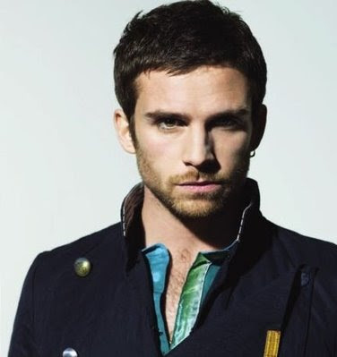

Christopher Anthony John Martin (nacido el 2 de marzo de 1977) es el cantante,
compositor, pianista, y ocasionalmente guitarrista de la popular banda de rock, Coldplay. Tiene una voz
de barítono y es conocido por su frecuente uso del falsetto.
Martin es el mayor de cinco hermanos, hijo de Anthony y Alison Martin, un contador y una maestra.
Asistía a la Sherbone School, una escuela solo para varones en Dorset, y es graduado con honores y como el
Primero de la Clase en el University College of London, donde fue capitán del segundo XI Equipo de Hockey.
Martin siempre toco el piano familiar desde muy pequeño, y luego aprendería como tocar la guitarra y violín.
Jonathan Mark Buckland (11 de septiembre de 1977, en Londres, Inglaterra), es cofundador y guitarrista. Vivió en Londres hasta los cuatro años de edad, cuando se trasladó a vivir en Pantymwyn, Gales del Norte.Comenzó a tocar la guitarra a la edad de once años. Asistió a las escuelas Ysgol y Waun y AlunSchool en Mold, Gales; luego inició sus estudios de Astronomía y Matemáticas en el University College de Londres, donde conoció a sus compañeros de banda, teniendo una gran amistad con Martin, con quien se trasladó a vivir antes de formar Coldplay. Jon trabajó como conserje escolar. A pesar de ser Zurdo, toca la guitarra de manera tradicional. Buckland era vegetariano desde hace algún tiempo.
Guy Rupert Berryman (Kirkcaldy, Escocia, 12 de abril de 1978) es el bajista, también se le reconoce por ser el de la voz suave. Es zurdo, aunque toca el bajo de forma diestra. Nació en Kirkcaldy, en la región de Fife, Escocia, hijo del ingeniero inglés Rupert Berryman y de Elizabeth Renni Grant, maestra. Comenzó sus estudios en la Edinburgh Academy ubicada en Edimburgo. Comenzó una carrera de Ingeniería en la universidad; pero más tarde optó a estudiar Arquitectura. Luego de un año, abandonó sus estudios para dedicarse de lleno a tocar el bajo en Coldplay. Trabajó como barman en un pub local.Tiene interés por la fotografía, la moda, los dispositivos electrónicos, instrumentos musicales de época y correr maratones.
William Raymond Champion (Southampton, 31 de julio de 1978) es la voz secundaria y el percusionista principal de la banda inglesa Coldplay. En varios de sus conciertos, canta canciones como vocalista principal, notándose también que cuando los miembros del grupo cantan los coros, su voz es la más potente, como en la canción Viva La Vida. Champion nació en Southampton, Hampshire, Inglaterra, siendo sus padres, Timothy Champion y Sara Champion, ambos profesores de arqueología en la Universidad de Southampton, donde actualmente su padre sigue enseñando y solía ser Disc-jockey usando el nombre Champion Tunes.